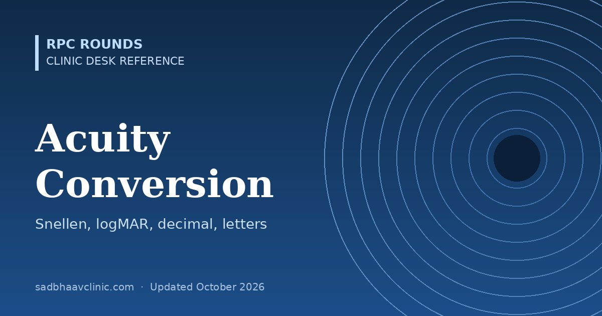

Last updated: October 2026
Convert visual acuity between Snellen (metres and feet), decimal, logMAR and ETDRS letter score, with near-vision equivalents. Type any one value below.
| Snellen (m) | Snellen (ft) | Decimal | logMAR | ETDRS letters |
|---|---|---|---|---|
| 6/3 | 20/10 | 2.00 | -0.3 | 100 |
| 6/3.8 | 20/13 | 1.58 | -0.2 | 95 |
| 6/4.8 | 20/16 | 1.25 | -0.1 | 90 |
| 6/6 | 20/20 | 1.00 | 0.0 | 85 |
| 6/7.5 | 20/25 | 0.80 | +0.1 | 80 |
| 6/9.5 | 20/32 | 0.63 | +0.2 | 75 |
| 6/12 | 20/40 | 0.50 | +0.3 | 70 |
| 6/15 | 20/50 | 0.40 | +0.4 | 65 |
| 6/19 | 20/63 | 0.32 | +0.5 | 60 |
| 6/24 | 20/80 | 0.25 | +0.6 | 55 |
| 6/30 | 20/100 | 0.20 | +0.7 | 50 |
| 6/38 | 20/127 | 0.16 | +0.8 | 45 |
| 6/48 | 20/160 | 0.12 | +0.9 | 40 |
| 6/60 | 20/200 | 0.10 | +1.0 | 35 |
| 3/60 | 20/400 | 0.05 | +1.3 | 20 |
| 1/60 | 20/1200 | 0.017 | +1.8 | not measurable |
logMAR = log10(denominator ÷ numerator). ETDRS letter score ≈ 85 − 50 × logMAR (85 letters = 6/6). Each logMAR line (0.1) is 5 letters.
| Recording | Approximate logMAR | Notes |
|---|---|---|
| Counting fingers (CF) | ≈1.9–2.0 | Record the distance, e.g. CF 1 m; CF at 1 m ≈ 1/60 |
| Hand movements (HM) | ≈2.3 | Not a true acuity; use only for comparison |
| Light perception (PL) | not quantifiable | Record projection in four quadrants |
| No light perception (NPL) | not quantifiable | Confirm with a bright light, both eyes |
CF and HM equivalents follow Schulze-Bonsel et al. (IOVS 2006). Avoid averaging them with measured acuities in audits.
| N notation | M units | Distance equivalent at 40 cm |
|---|---|---|
| N5 | ≈0.6M | ≈6/9 (20/32) |
| N6 | ≈0.75M | ≈6/12 (20/40) |
| N8 | ≈1.0M | ≈6/15 (20/50) |
| N10 | ≈1.25M | ≈6/19 (20/63) |
| N12 | ≈1.5M | ≈6/24 (20/80) |
| N18 | ≈2.25M | ≈6/36 (20/110) |
| N24 | ≈3M | ≈6/48 (20/150) |
| N36 | ≈4.5M | ≈6/60+ (20/220) |
| N48 | ≈6M | ≈6/90 (20/300) |
Near charts are not standardised and Jaeger sizes vary between charts, so treat near equivalents as approximate. 1M print is roughly 8-point newsprint (N8). Always record the test distance.
Recording tips: note whether acuity is unaided, with glasses or pinhole; record partial lines (6/9 −2); use logMAR charts for research and audits; for children, record the test used (Lea, HOTV, Kay, Cardiff, Teller).
Related: what 6/60 or 3/60 means (for patients), visual disability calculator, low vision aids.
📘 Want more exam-ready material? See Most Commons in Ophthalmology on Kindle, or browse all my books.
Looking for an eye specialist in Ahmedabad? Learn about our Eye Department or book a consultation with Dr. Dhaval Patel.